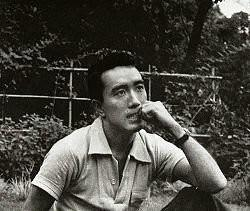

YUKIO MISHIMA
(1925-1970) Yukio Mishima (三島 由紀夫; phiên âm: ( Tam Đảo Do Kỷ Phu ), tên thật Hiraoka Kimitake (平岡 公威; phiên âm: Bình Cương Công Uy ) (14 tháng 1 1925 - 25 tháng 11 1970) là một nhà văn và nhà biên kịch Nhật Bản, nổi tiếng với các tác phẩm như Kinkakuji (1956), bộ bốn tác phẩm "豐饒の海" (Hōjō no Umi , Biển cả muôn màu , 1965-70).
Mishima sinh ra tại quận Yotsuya ở Tokyo (ngày nay là một phần của Shinjuku). Cha ông là Azusa Hiraoka, một nhân viên chính phủ, trong khi mẹ ông Shizue, là con một hiệu trưởng tại Tokyo. Ông bà nội của Mashima là Jotarō và Natsuko Hiraoka. Ông có một người em trai tên là Chiyuki và một em gái tên Mitsuko, người qua đời sớm do sốt ban.
Tuổi thơ của Mishima bị phủ bóng bởi người bà Natsu, người đã nuôi và cách ly ông khỏi gia đình trong vài năm. Natsu là cháu nuôi của Matsudaira Yoritaka, một daimyo của Shishido tại tỉnh Hitachi và lớn lên trong gia đình công chúa Arisugawa Taruhito; bà vẫn duy trì lễ giáo quý tộc ngay cả sau khi kết hôn với ông của Mishama. Natsu là một người cục cằn và dễ nổi nóng, điều này thường xuyên được ám chỉ trong các tác phẩm của Mishima. Chính qua tìm hiểu Natsu mà một số người đã phát hiện nỗi ám ảnh với cái chết của Mishima. Natsu thường không cho Mishima ra ngoài ánh nắng hay tham gia vào bất hoạt động thể thao nào với các cậu bé khác; điều này khiến ông phải dành phần lớn thời gian một mình hoặc chơi đồ chơi con gái.
Mishima trở lại gia đình năm 12 tuổi. Cha ông, một con người của kỉ luật quân đội, đã áp dụng kỉ luật sắt với cậu bé Mishima bằng cách bồng cậu bé lên thành của một con tàu cao tốc; cha của Mishima cũng thường xuyên lùng sục phòng của ông và phát hiện những sở thích "ẻo lả" về văn chương của Mishima và xé các bản thảo đó của ông.
Ở tuổi 12, Mishima viết những câu chuyện đầu tiên của ông. Ông đọc ất nhiều các tác phẩm của Oscar Wilde, Rainer Maria Rilke và vô số những tác gia kinh điển Nhật Bản khác. Ông nhập học một trường dành cho tầng lớp quý tộc ở Nhật.
Sau sáu năm học, Mishima trở thành thành viên trẻ nhất trong ban biên tập văn học của trường, ông bị cuốn hút bởi các tác phẩm của Tachihara Michizō. Những tác phẩm xuất bản đầu tiên của ông bao gồm thơ Waka , trước khi chuyển hướng sang thể loại văn xuôi.
Mishima được mời viết chuyện ngắn văn xuôi cho tạp chí văn học của trường và gửi bản Hanazakari no Mori (花ざかりの森 The Forest in Full Bloom ), một câu chuyện trong đó người kể mô tả cảm xúc về những người tổ tiên còn sống trong nội tâm nhân vật. Giáo viên của Mishima rất ấn tượng với câu chuyện và họ giới thiệu nó cho tạp chí văn học uy tín, Bungei-Bunka (文芸文化 Literary Culture ). Câu chuyện với ngôn ngữ ẩn dụ và cách ngôn, đã được xuất bản năm 1944, giới hạn trong 4000 bản do việc thiếu nguyên liệu giấy thời chiến tranh. Để bảo vệ ông khỏi phản ừng từ các bạn đồng môn, các giáo viên của Mishima đã đặt cho ông bút danh "Yukio Mishima".
Chuyện Tabako (煙草, tạm dịch: Thuốc lá ), xuất bản năm 1946, mô tả sự khinh miệt và đối xử mà Mishima gặp phải ở trường khi ông thổ lộ với những thành viên của CLB Rugby trường rằng ông gắn bó với nghề văn chương. Những kí ức này cũng là nguồn tư liệu cho tác phẩm Shi o Kaku Shōnen (詩を書く少年, tạm dịch: Cậu bé làm thơ ) sau này, xuất bản năm 1954.
Mishima bị gọi kiểm tra sức khỏe quân ngũ trong thế chiến II. Nhưng khi kiểm tra sức khỏe, ông bị cảm lạnh và đã nói dối với bác sĩ quân đội rằng mình bị lao, vì vậy Mishima đã được tuyên bố là không đủ tiêu chuẩn sức khỏe nhập ngũ.
Dù cho người cha cấm ông không được viết truyện nữa, nhưng Mishima vẫn tiếp tục bí mật viết vào buổi đêm, dưới sự ủng hộ và bảo vệ của mẹ ông, bà luôn là người đầu tiên đọc một chuyện mới của Mishima. Tham dự các buổi thuyết giảng ban ngày và viết chuyện ban đêm, Mishima tốt nghiệp trường Đại học Tokyo năm 1947. Sau đó ông dành được một vị trí nhân viên bộ tài chính trong chính phủ, một tương lai sáng lạn đang chờ đón.
Tuy nhiên, Mishima lại cảm thấy kiệt sức và cha ông đồng ý cho ông từ chức trong năm đầu tiên để tập trung thời gian cho viết lách.
Mishima bắt đầu viết chuyện ngắn Misaki nite no Monogatari (岬にての物語 A Story at the Cape ) năm 1945 và tiếp tục viết cho đến cuối thế chiến thứ 2. Vào tháng 1 năm 1946, ông tới thăm nhà văn Yasunari
Kawabata tại Kamakura và mang theo bản thảo chuyện Chūsei (中世 The Middle Ages ) và Tabako , nhằm xin lời khuyên và sự giúp đỡ của Kawabata. Tháng 6 năm 1946, nhờ lời khuyên của Kawabata, Tabako được tạp chí văn chương mới Ningen (人間 Humanity ) xuất bản.
Cũng trong năm 1946, Mishima bắt đầu viết tiểu thuyết đầu tay, Tōzoku (盗賊 Thieves ), trong đó câu chuyện kể về hai thành viên trẻ trong gia đình quý tộc luôn muốn được tự vẫn. Tiểu thuyết này xuất bản năm 1948, nhờ nó mà Mishima đã được xếp vào hàng ngũ thế hệ thứ hai của những nhà văn thời hậu chiến. Sau đó, ông cho ra đời Confessions of a Mask , một tác phẩm bán tự truyện kể về người đồng tình luôn phải lấp sau mặt nạ để hòa nhập vào xã hội. Cuốn tiểu thuyết đã rất thành công và biến Mishima trở thành một nhân vật nổi tiếng ở tuổi 24.
Vào khoảng năm 1949, Mishima cho xuất bạn một serie tiểu luận trong Kindai Bungaku về Kawabata Yasunari, người mà ông dành cho một sự ngưỡng mộ sâu sắc. Mishima là một nhà văn đa tài, ông không chỉ viết tiểu thuyết, tiểu thuyết ngắn, chuyện ngắn, tiểu luận mà còn là một nhà biên kịch có tiếng cho sân khấu kịch Kabuki và những phiên bản hiện đại của thể loại kịch Nō.
Các tác phẩm của ông đã dành được tiếng vang quốc tế và rất nhiều trong số đó đã được dịch sang tiếng Anh.
Mishima đã đi tới rất nhiều nơi; năm 1952, ông tới thăm Hy Lạp, đất nước đã từng làm say đắm ông từ thời thơ ấu. Những kinh nghiệm thu được từ chuyến thăm đã xuất hiện trong Shiosai ( Sound of the Waves ), xuất bản năm 1954, câu chuyện lấy cảm hứng từ thần thoại Daphnis và Chloe của Hy Lạp.
Mishima cũng khắc họa những sự kiện đương thời trong các tác phẩm của mình. The Temple of the Golden Pavilion xuất bản năm 1956, là một câu chuyện tiểu thuyết hóa về vụ cháy ngôi chùa nổi tiếng ở Kyoto. Utage no Ato ( After the Banquet ), xuất bản năm 1960, bám sát những sự kiện xung quanh chiến dịch tranh cử thị trưởng Tokyo của chính trị gia Hachirō Arita, vì tác phẩm này mà Mishima đã bị kiện vị tội xâm phạm cá nhân. Năm 1962, tác phẩm Utsukushii Hoshi ( Beautiful Star ), một tác phẩm gần với thể loại khoa học viễn tưởng thời đó, được xuất bản và nhận được những phản ứng trái ngược.
Mishima từng ba lần được đề cử giải Nobel và là một nhà văn yêu thích của rất nhiều nhà xuất bản quốc tế. Tuy nhiên, năm 1968, người thầy đầu tiên của ông Kawabata dành được giải Nobel và Mishima hiểu rằng cơ hội nhận được giải thưởng cho người Nhật Bản trong tương lai gần là rất nhỏ. Cũng có tin đồn rằng Mishima muốn chuyển giải thưởng cho bậc lão thành Kawabata, người đã giới thiệu ông tới văn đàn Tokyo trong thập niên 1940.
Năm 1955, Mishima tham gia lớp tập thể thao và chế độ dinh dưỡng cho tập luyện ba buổi một tuần được ông tuân thủ trong suốt 15 năm cuối đời. Trong bài tiểu luận xuất bản năm 1968, Sun and Steel , Mishima phàn nàn về việc những nhà trí thức coi trọng đầu óc hơn thân thể. Mishima sau đó đã trở nên rất điêu luyện với môn kendō.
Dù cho đã từng thăm các quan bar dành cho gay ở Nhật Bản, vấn đề định hướng giới tính của Mishima hiện vẫn là một chủ đề bàn thảo ở Nhật. Mishima kết hôn với Yoko Sugiyama ngày 11 tháng 6 năm 1958 và có hai con là Noriko (1959) và Lichiro (1962).
Năm 1967, Mishima gia nhập Lực lượng phòng vệ đất liền Nhật Bản và trải qua việc tập luyện cơ bản. Một năm sau đó, ông thành lập Tatenokai (Hội lá chắn) nhằm tập hợp các thanh niên trai tráng có võ và thề sẽ bảo vệ Nhật Hoàng.
Trong 10 năm cuối cuộc đời, Mishima viết một vài vở kịch và tham gia đóng trong vài bộ phim cũng như đồng chỉ đạo một bộ phim chuyển thể từ một trong những chuyện của ông, Patriotism, the Rite of Love and Death .
Ông cũng tiếp tục viết bộ bốn tác phẩm, Hōjō no Umi (Sea of Fertility) , những tác phẩm xuất bản theo khổ định kỳ từ tháng 9 năm 1965.
Ngày 25 tháng 11 năm 1970, Mishima và bốn thành viên của Hội lá chắn, tới thăm sĩ quan chỉ huy doanh trại Ichigaya, một trụ sở ở Tokyo của Lực lượng phòng vệ Nhật Bản. Bên trong trụ sở, họ dựng chướng ngại vật và trói vị chỉ huy trên ghế. Với một bản tuyên ngôn và khẩu hiệu chuẩn bị sẵn nêu rõ các yêu cầu, Mishima bước ra ban công để hô hào các binh sĩ tụ tập phía dưới và xúi dục họ đảo chính để thiết lập lại sức mạnh của hoàng đế. Tuy nhiên, những lời nói của Mishima chỉ khiến chọc giận các binh sĩ và bản thân ông thì bị chế giễu. Ông hoàn thành bài diễn văn đã chuẩn bị sẵn, trở lại phòng chỉ huy và tự sát theo nghi thức seppuku , nhiệm vụ sau cùng truyền thống của nghi thức này được giao cho thành viên Masakatsu Morita của Hội lá chắn thực hiện, tuy nhiên Morita không đủ khả năng thực hiện điều này và cuối cùng Mishima cho phép một thành viên khác của Hội lá chắn, là Hiroyasu Koga,chặt đầu ông.
Những nghi vấn được đặt ra xung quanh sự tự vẫn của Mishima. Vào thời điểm Mishima qua đời, ông đã hoàn thành tác phẩm cuối cùng The Sea of Fertility . Ông được công nhận là một trong những nhà văn hậu chiến phong cách nhất trong văn học ngôn ngữ Nhật.
Mishima viết 40 tiểu thuyết, 18 vở kịch, 20 sách về chuyện ngắn, khoảng 20 sách về tiểu luận cũng như một kịch bản. Phần lớn các tác phẩm này bao gồm những cuốn sách được viết nhanh nhằm thu lợi nhuận, dù chúng bị coi nhẹ nhưng những phần quan trọng của các cuốn sách này vẫn được lưu giữ.
Vào cuối đời, Mishima là một người tán dương chủ nghĩa dân tộc. Các nhân vật cánh tả không ưa gì ông, đặc biệt là vì ý tưởng chấn hưng tinh thần võ sĩ đạo (bushidō) của Mishima, ông cũng bị rất nhiều những người theo chủ nghĩa dân tộc chỉ trích vì luận điểm nêu ra trong Bunka Bōeiron (文化防衛論 A Defense of Culture ), cho rằng Hirohito nên thoái vị và phải nhận trách nhiệm cho sự chết chóc trong chiến tranh.
∙ Giải Shincho của Nhà xuất bản Shinchosha, 1954, cho The Sound of Waves .
∙ Giải Kishida của Nhà xuát bản Shinchosha cho các tác phẩm kịch, 1955.
∙ Giải Yomiuri của Báo Yomiuri Newspaper Co., cho tiểu thuyết xuất sắc nhất, 1957, The Temple of the Golden Pavilion .
∙ Giải Yomiuri của Báo Yomiuri Newspaper Co., cho vở kịch xuất sắc nhất, 1961, Toka no Kiku .